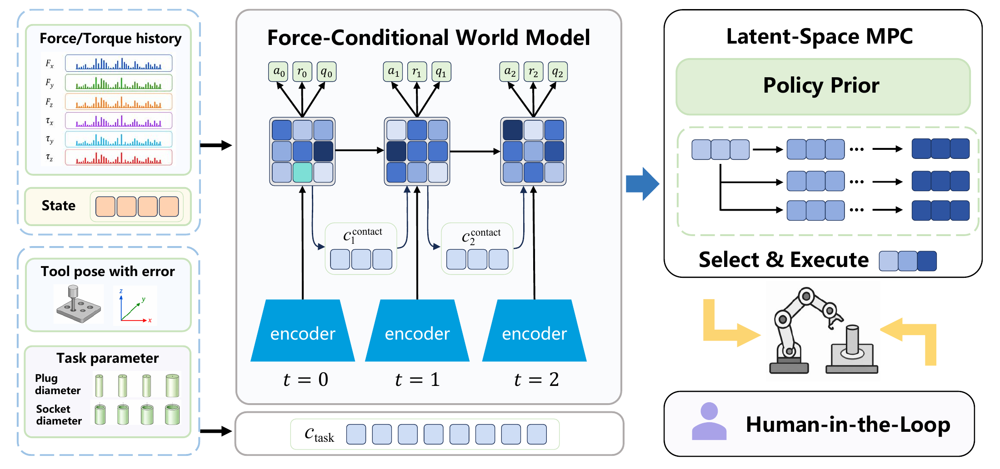

FACA: Force-Aware Contact Adaptation
for Task-Parameterized Robotic Assembly
Xi’an Jiaotong University
Simulation video
Abstract. Reliable robotic assembly requires both nominal task knowledge and feedback about execution-dependent contact conditions. We introduce FACA, a task-conditioned, contact-aware world model for parameterized assembly. FACA encodes task descriptors and recent state–action–wrench histories through separate pathways, then integrates them into a recurrent latent state. The model supports prediction and control without future force measurements. Across ten assembly families evaluated at held-out sizes, FACA achieves a success rate of 76.1%, compared with 66.0% for task-conditioned TD-MPC2.
Method
The task descriptor supplies a fixed nominal prior, while four steps of interaction history provide online contact evidence. These two pathways update a recurrent latent state that conditions dynamics, reward, value, and the policy prior. Alignment and force-regime supervision shape the contact representation during training.
